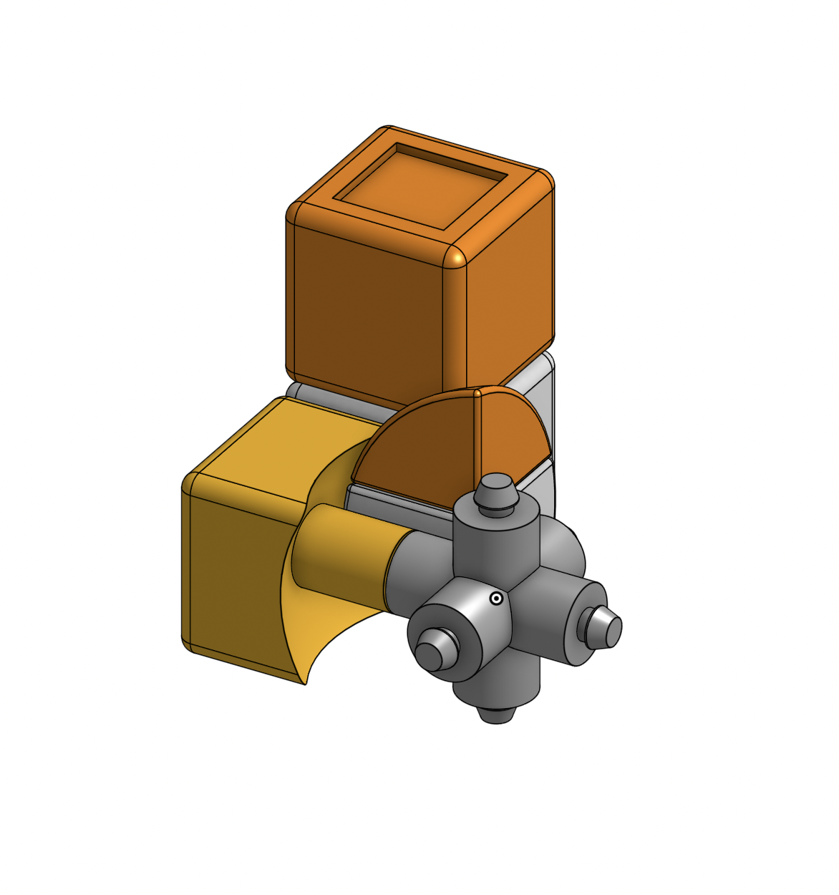
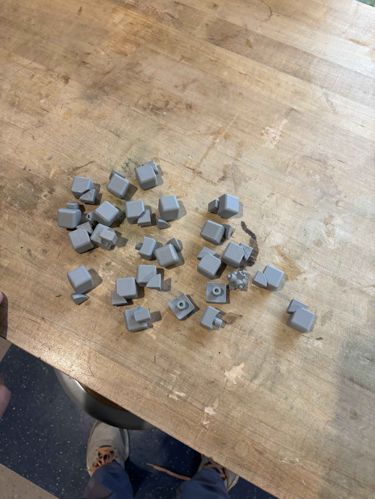

Modeled all four core components of a functional Rubik's cube in Onshape and iterated through 3D-printed prototypes to achieve smooth, repeatable action.
◼ Used a familiar object to push into the harder parts of Onshape — multipart assemblies, connection geometry, and iterating through printed prototypes until it actually worked.
Overview
I picked the Rubik's cube as a CAD project because it looks simple but isn't. Every layer rotates independently while all the pieces stay captured — which means the connection geometry has to be exactly right.
CAD Modeling
I modeled four components in Onshape: the core, center pieces, edge pieces, and corner pieces. The trickiest part was the connection geometry — pieces have to rotate freely in any axis but still stay in.
Working in a multipart file was also a good exercise; any change to shared geometry ripples through everything, so you have to think a few steps ahead before making edits.
3D Printing & Iteration
The first few prints didn't work — tolerances were off, so pieces were either too tight to move or too loose to hold together. I went through several rounds adjusting clearances and radii until the cube actually turned the way it's supposed to.

